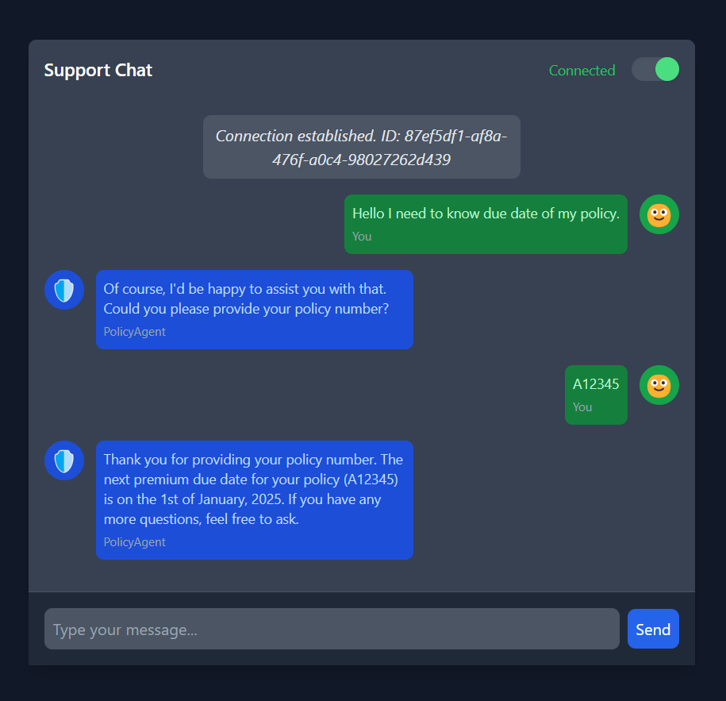

Multi-Agent Insurance Support System Example for EggAI 🥚🤖
A Seamless Integration of Proven Components
Building intelligent and collaborative systems often involves integrating well-established components to create a robust solution. The Multi-Agent Insurance Support System for EggAI exemplifies this approach by weaving together functionalities from previous EggAI examples to deliver an efficient and user-friendly insurance support platform.
Foundation from Previous Examples
This example leverages key concepts and components from three foundational EggAI examples:
- WebSocket Gateway (
examples/02-websocket-gateway): - Purpose: Enables real-time, bidirectional communication between users and the server.
-
Integration: Serves as the backbone for the chat interface, allowing seamless message exchange through WebSockets.
-
LiteLlmAgent (
examples/05-litellm-agent): - Purpose: Provides a lightweight interface for integrating language models, facilitating efficient agent interactions.
-
Integration: Powers the core agents (TriageAgent, PolicyAgent, and TicketingAgent) with language understanding and response generation capabilities.
-
Triage Concept (
examples/06-multi-agent-conversation): - Purpose: Implements a central routing mechanism to direct user messages to the appropriate agent based on context.
- Integration: Forms the intelligence behind the TriageAgent, ensuring accurate and context-aware message routing.
What’s Inside? 🗂️
Agents Overview
- LiteLlmAgent:
- Role: Core agent class facilitating communication with language models.
-
Features: Supports tool integrations for enhanced functionality and task-specific operations.
-
PolicyAgent:
- Role: Handles inquiries related to insurance policies, including coverage details, premiums, and modifications.
-
Functionality: Accesses a mock
policies_databaseto retrieve and provide accurate policy information. -
TicketingAgent:
- Role: Manages support ticket creation and retrieval for issues requiring escalation.
-
Functionality: Utilizes a mock
ticket_databaseto store and manage support tickets, informing users about escalation to human support. -
TriageAgent:
- Role: Central router for user messages.
- Functionality: Analyzes user inquiries and directs them to the appropriate agent (PolicyAgent or TicketingAgent) based on predefined guidelines and context.
System Components
- FastAPI Server with WebSocket Integration:
- Function: Hosts the real-time communication interface and serves the HTML chat interface (
chat.html). -
Access: Available at
http://127.0.0.1:8000/with WebSocket support atws://127.0.0.1:8000/ws. -
User-Friendly Chat Interface:
- Description: A web-based UI that connects users to the WebSocket gateway, enabling real-time interaction with the multi-agent system.
How It Works 🌊
- User Interaction:
-
Users access the chat interface via http://127.0.0.1:8000/ and send messages related to their insurance needs.
-
TriageAgent:
-
Receives the user message, analyzes its content and context, and determines whether to route it to the PolicyAgent or TicketingAgent.
-
PolicyAgent:
- If the inquiry is policy-related, the PolicyAgent retrieves information from the
policies_databaseand responds accordingly. -
If the request is outside its scope, it defers back to the TriageAgent for further handling.
-
TicketingAgent:
- For issues requiring escalation, the TicketingAgent creates a support ticket in the
ticket_databaseand notifies the user that their issue is being escalated to human support.
Prerequisites 🔧
Before running this example, ensure you have the following:
Step 1: Install Dependencies
pip install eggai litellm fastapi uvicorn
Step 2: Start Services with Docker
This example uses a messaging broker. Launch the necessary services using Docker:
docker compose up -d
Running the Example 🏆
- Navigate to the Project Directory:
bash
cd path/to/project-directory
- Run the Main Script:
bash
python main.py
- Outcome: Starts the FastAPI server accessible at
http://127.0.0.1:8000/with WebSocket support atws://127.0.0.1:8000/ws.
Access the Chat Interface
Open your web browser and navigate to http://127.0.0.1:8000/ to interact with the multi-agent system through the intuitive chat UI.
Expected Output 📤
Upon running the example and accessing the chat interface, you should see a dynamic web-based chat UI similar to the screenshot below:

Sample Interaction
-
User initiates the conversation:
Hello, I need to check my policy details. -
TriageAgent routes the message to PolicyAgent:
📄 PolicyAgent: Hello! I'm here to help you with your policy inquiries. Could you please provide me with your **policy number**? If you don't have it handy, your **full name** will work too, and I can look up the details for you. -
User provides the policy number:
A12345 -
PolicyAgent responds with policy details: ``` 📄 PolicyAgent: Thank you for providing your policy number. Here are the details:
- Policy Number: A12345
- Policyholder Name: John Doe
- Coverage Details: Comprehensive
- Premium Amount: $500
- Due Date: January 1, 2025
If you have any more questions or need further assistance, feel free to ask! ```
-
User requests support for a billing issue:
I need help with a billing issue. -
TriageAgent routes the message to TicketingAgent:
💬 TicketingAgent: We have created a support ticket ESC-0001 for your issue. Our Billing team will reach out to you shortly.
Architecture Overview 🔁

- User Interaction: Engages with the system through a WebSocket-enabled chat interface.
- TriageAgent: Analyzes incoming messages and routes them to the appropriate agent based on content.
- PolicyAgent: Handles policy-related inquiries using a mock
policies_database. - TicketingAgent: Manages support ticket creation and retrieval for escalated issues.
- Channels:
- User Channel: Facilitates interactions between the user and the agents.
- Agents Channel: Enables communication and coordination among different agents.
- WebSocket Gateway: Oversees real-time communication between the FastAPI server and connected clients.
Code Breakdown 🔬
Key Components
- Agent Initialization:
-
TriageAgent, PolicyAgent, and TicketingAgent are initialized using the LiteLlmAgent with specific system prompts and model configurations, defining their respective roles and functionalities.
-
Mock Databases:
policies_database: Simulates a repository of insurance policies for demonstration purposes.-
ticket_database: Manages support tickets, facilitating the creation and retrieval processes. -
Tools Integration:
- PolicyAgent Tools:
get_policy_details: Retrieves specific policy information from thepolicies_database.
-
TicketingAgent Tools:
create_ticket: Generates new support tickets.retrieve_ticket: Retrieves existing support tickets based on ticket IDs.
-
Triage System Prompt:
-
Guidelines: Provides the TriageAgent with criteria and keywords to assess and route user inquiries effectively.
-
Message Handling:
- WebSocket Communication: Users interact through the chat interface, with messages processed by the TriageAgent and routed to the appropriate agents.
-
Structured Communication: Ensures context is maintained, providing clear and relevant responses.
-
FastAPI Server:
-
Management: Handles all WebSocket connections, routes messages through agent channels, and serves the chat interface (
chat.html) to users. -
WebSocket Manager:
-
Functionality: Manages connection states, routes messages between users and agents, and maintains message caches to preserve conversation context.
-
Main Script (
main.py): - Initialization: Sets up all agents, configures communication channels, and launches the FastAPI server with WebSocket support.
- Lifecycle Management: Oversees the startup and shutdown processes, ensuring that all components operate smoothly and efficiently.
Reused Components from EggAI Examples
- WebSocket Gateway:
- Source: Adapted from
examples/02-websocket-gateway. -
Function: Facilitates real-time, bidirectional communication between the FastAPI server and connected clients.
-
LiteLlmAgent:
- Source: Derived from
examples/05-litellm-agent. -
Function: Provides a lightweight interface for integrating language models, enabling efficient processing and response generation.
-
Triage Concept:
- Source: Inspired by
examples/06-multi-agent-conversation. - Function: Implements the TriageAgent, which intelligently routes user messages to the appropriate agents based on content analysis and predefined guidelines.
Cleaning Up ❌
When you've finished interacting with the system, gracefully shut down the services to free up resources:
docker compose down -v
- Effect: Stops and removes the Docker containers along with their associated volumes, ensuring no residual processes remain active.
Next Steps 🚀
Expand and enhance your multi-agent system with these next steps:
- Explore: Add new agents or enhance existing ones with additional tools and capabilities to handle a broader range of inquiries.
- Integrate: Connect the system to real databases or external services for dynamic data retrieval and storage, moving beyond mock databases.
- Enhance UI: Upgrade the
chat.htmlinterface to provide an even more engaging user experience, incorporating features like user authentication, message history, and real-time notifications. - Learn More: Dive into other examples within the
examplesfolder to discover advanced multi-agent patterns, integrations, and best practices. - Contribute: Join the EggAI community by sharing your feedback, reporting issues, or contributing code to help improve the framework.
Thank you for exploring the Multi-Agent Insurance Support System example for EggAI! 🥚🤖 We hope this guide provides you with valuable insights into building and managing collaborative multi-agent systems to handle complex user interactions effectively. 🙏✨